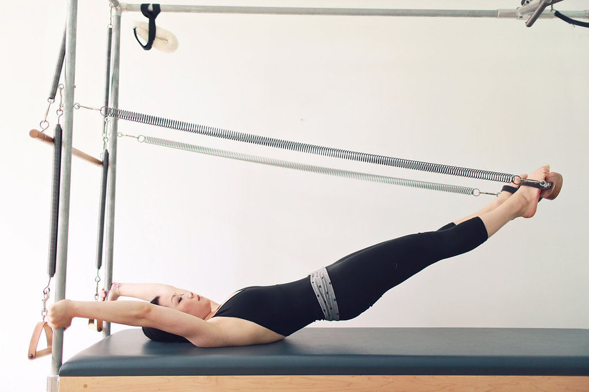
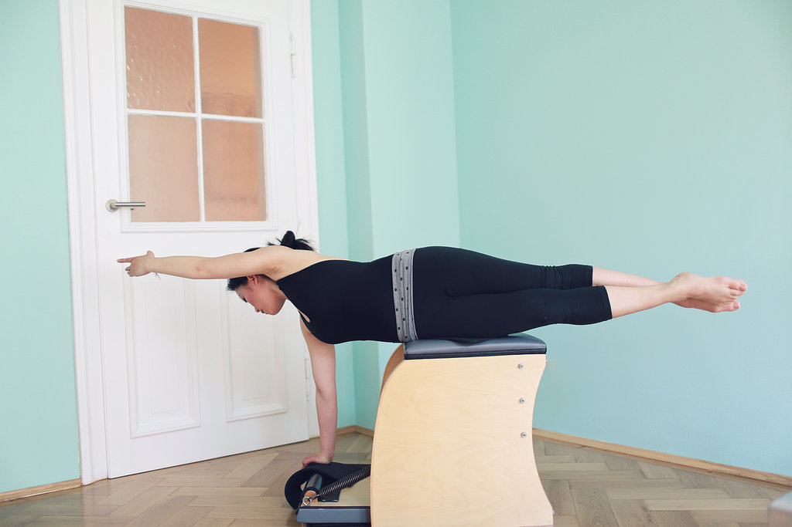
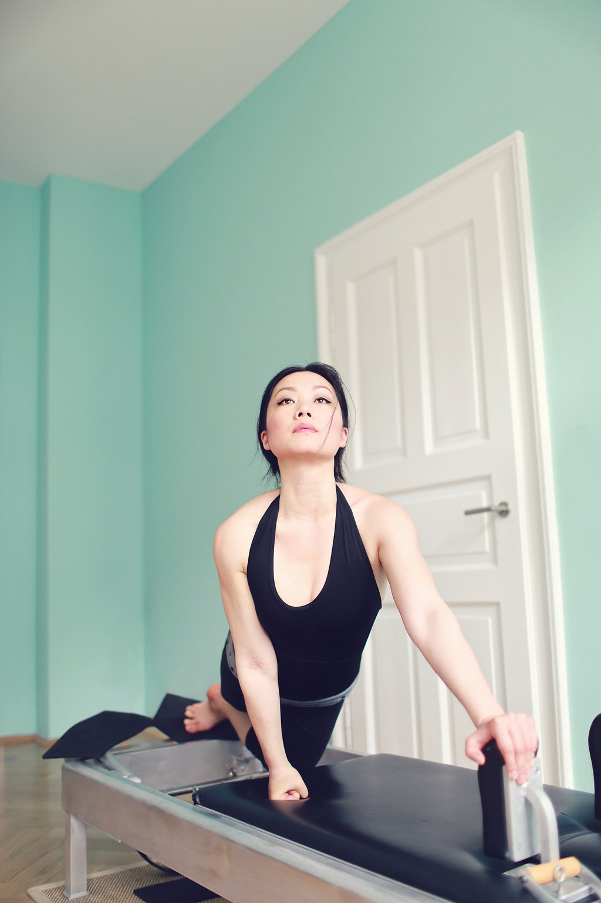
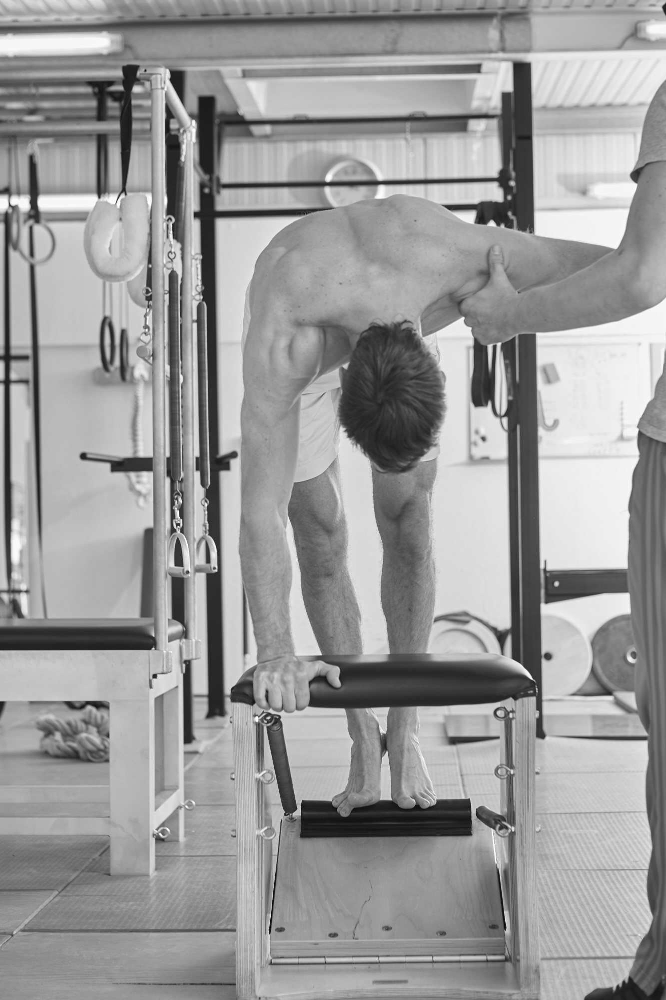
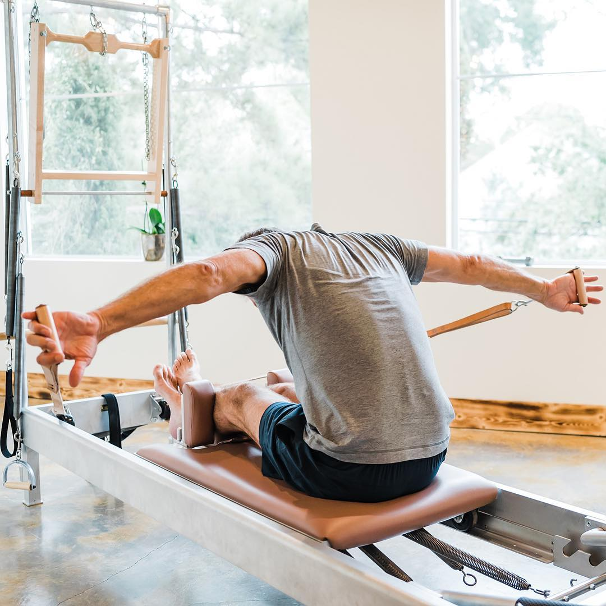
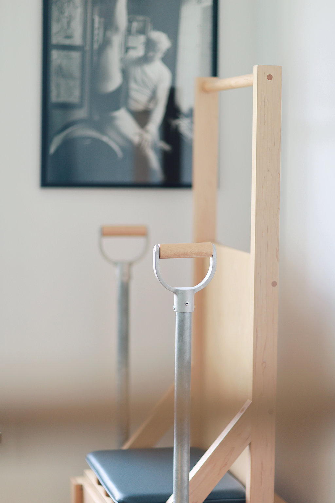
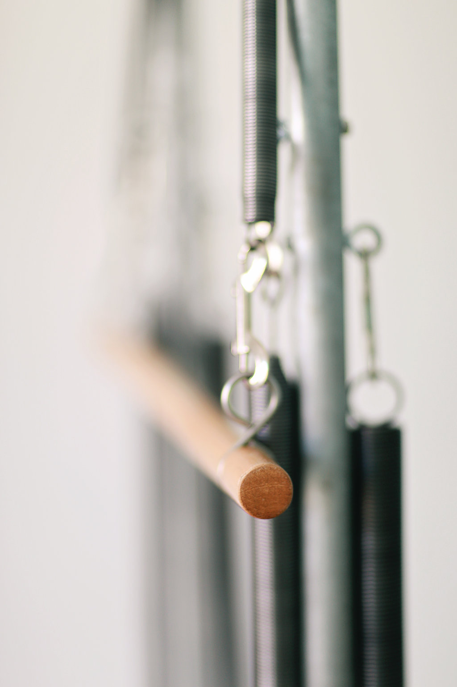
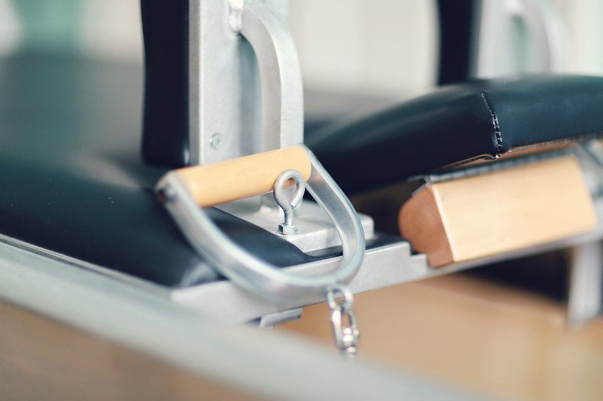
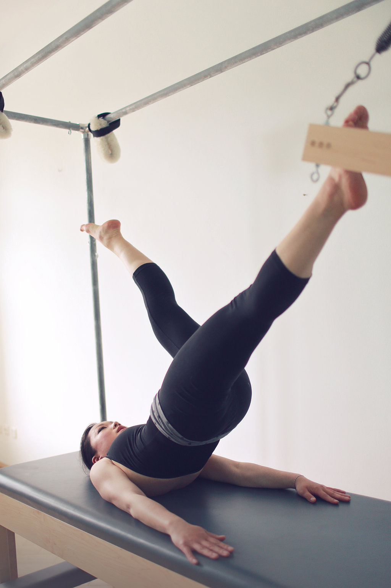
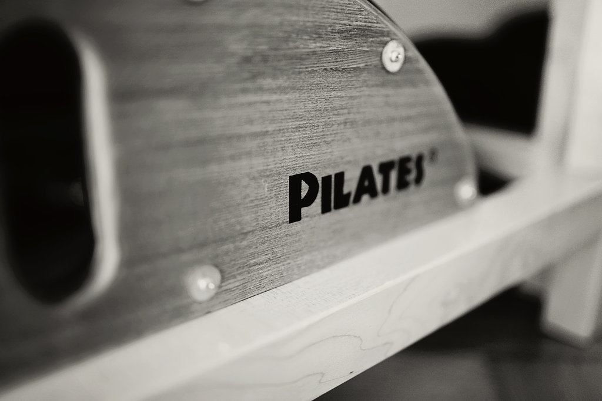

Willkommen bei Rebell Pilates, wo du die ursprüngliche Methode von Joseph Pilates in ruhiger und privater Atmosphäre erleben kannst. Pilates hat seine Methode Contrology genannt und entwickelt, um das strukturelle Gleichgewicht wiederherzustellen, den Körper auf intelligente Weise zu stärken und eine echte muskuläre Kontrolle zu entwickeln. Der Ansatz ist korrigierend, präzise und systematisch verwurzelt. Unser Unterricht folgt der traditionellen Methode auf über Dutzend authentischen Geräten, basierend auf den ursprünglichen Patenten von Joseph Pilates. Der Name „Pilates“ ist rechtlich nicht geschützt und Rebell Pilates ist das einzige ausgestattete Studio im Landkreis München, das nach der ursprünglichen Methode aus dem New Yorker Gym unterrichtet. Jede Einheit hat einen Zweck. Der Ablauf ist logisch und maßgeschneidert. Jede Bewegung baut auf der vorherigen auf. Dies ist diszipliniertes Training für langfristige Gesundheit und Fitness. Wir stellen Qualität über Quantität. Bei Rebell Pilates Pilates ist jede Trainingseinheit Teil eines ganzheitlichen Systems, das auf strukturelle Integrität, funktionelle Kraft und lebenslange Beweglichkeit ausgerichtet ist. Erlebe originales Pilates so, wie es gelernt werden sollte, mit Präzision, Fokus und Integrität. Wenn du dich unabhängig vom Alter 10 Jahre jünger fühlen willst, dann ist Rebell Pilates für dich richtig.
Hier buchenPilates
Hubertus Joseph Pilates (1883-1967) entwickelte im 20. Jahrhundert Contrology, eine einzigartige Bewegungstechnik, die sich als eine Dehnung in zwei Richtungen vom starken Zentrum zusammenfassen lässt. Sie stärkt die Rücken-, Rumpf-, und Bauchmuskeln, da alle Bewegungen aus der Mitte heraus entstehen. Die Methode wird auf mehreren speziellen Geräten mit Federn ausgeführt, so dass das neuromuskuläre Gedächtnis lernt, die Technik in verschiedenen Situationen anzuwenden. Daher sind wenige Wiederholungen gebraucht, um die Bewegung beherrschen zu können. Die Sprungfedern assistieren die Muskeln und fordern sie gleichzeitig heraus, ohne die Gelenke zu belasten. Haltung, Beweglichkeit, Koordination und Kraft verbessern sich ganz natürlich durch die Übungen selbst. Contrology ist so konzipiert, dass die korrekte Ausrichtung und strukturelle Korrektur in jede Bewegung integriert sind, wodurch sicherere Bewegungen, schnellere Fortschritte, nachhaltige Ergebnisse und ein geringeres Verletzungsrisiko gewährleistet werden. Menschen beginnen mit Contrology zur Haltungskorrektur, zur Linderung chronischer Beschwerden, zur Verbesserung der Beweglichkeit, für mehr Rumpfstabilität und langfristige Kraft. Sie bleiben dabei, weil die Veränderungen messbar, funktional und nachhaltig sind.


Instrukteur
Ehemalige Tänzerin Alice R. Talkington trainierte u.a. mit vormaligen Schülern von Joe und Clara Pilates wie z.B. Jay Grimes (1940-2024) und Edwina Fontaine (1928-2014). Nach der Ausbildung bei Romana’s Pilates arbeitete Alice in London, Genf, Wien und München als Instrukteurin. 2015 veranstaltete sie Deutschlands ersten Kongress für Contrology mit Gratz Pilates (gratzpilates.com) als Equipment Sponsor. Während ihres vierjährigen Aufenthalts in Berlin war Alices Coach Moses Urbano (www.accesspilates.com), ein Protégé von Romana Kryzanowska, ehemalige Schülerin von Pilates, die die Führung des umgezogenen Studios nach Joes Tod übernommen hatte. Bevor sie 2024 Rebell Pilates in Regensburg gründete, war Alice in Frankreich, Hong Kong und den USA tätig. Zu ihren ehemaligen Kunden gehören Christine Kaufmann (1945-2017), Opernsängerin Albina Shagimuratova, Schauspielerin Astrid Posner, Musiker David Alan Cooper und Schriftsteller Benjamin von Stuckrad-Barre. Alice bildet sich fortlaufend mit weltweit renommierten Trainerinnen fort, u.a. Inelia Garcia, Dorothee Vandewalle und MeJo Wiggin.


Leistungsangebote
Rebell Pilates bietet etwas, das in der heutigen überfüllten Fitnesslandschaft selten geworden ist: echtes, originales Contrology mit Tiefe, Integrität und Zielbewusstsein. In einer Zeit, in der viele “Pilates” Studios 3 bis 14 Teilnehmer auf Reformer-ähnlichen Geräten in den Vordergrund stellen, konzentrieren wir uns auf deine Individualität und die Qualität deiner Bewegungen, nicht auf die Quantität. Unser Ziel ist es, dir zu helfen, die beste Version deines Körpers durch die ursprüngliche, von Joseph Pilates entwickelte Methode zu erreichen – ein ganzheitliches Körpertraining, das auf Präzision, Rhythmus und Kontrolle basiert. Wir bieten keine Variante von Pilates an. Wir bieten Contrology an – so, wie es ursprünglich in Form von Einzeltraining unterrichtet werden sollte. Trainingseinheiten bei uns sind 1:1 Termine ohne Raumteilung, Gruppendruck, Ablenkungen oder Zeitverschwendung. Dabei stehen dir alle Geräte zur Verfügung. Wenn du herausfinden möchtest, ob Contrology das Richtige für dich ist, buche bitte drei Einzelstunden im laufenden Monat als Teaser für €269. Solltest du entscheiden, mit dem Training fortzusetzen, ist bis Ende des laufenden Monats €90 pro Einheit zu entrichten. Dieses einmalige Einführungsangebot ist mit einem Geschenkabo bei Theatern vergleichbar.
Hier buchenApparate
Genau so wie man auf einem englischen Sattel nicht Western reiten kann, ist es wichtig, Ausrüstung mit den richtigen Abmessungen und Federspannung zu verwenden, um eine sichere und angemessene Technik zu gewährleisten. Joseph Pilates baute mit seinem Bruder Friedrich eigene Geräte. Insgesamt hatte Pilates 26 Patente, beginnend 1922 mit dem Foot Corrector. Das Universal Reformer ist das bekannteste Großgerät, das sich 1924 patentieren ließ, bevor Pilates 1926 nach New York City auswanderte. Das von Pilates konzipierte Universal Reformer unterscheidet sich von anderen ähnlich aussehenden “Reformern”, indem der Rahmen nur 80 Zoll lang ist und es über nur vier Federn mit gleichem Widerstand verfügt. Die Riemen sind aus Leder gefertigt, nicht aus Seil, und bieten eine langanhaltende Nutzung. Die Räder für die Lederriemen sind direkt am Rahmen angesetzt und nicht auf sogenannten Risers, die den Federwiderstand und den Wickel der Bewegungen deutlich verändern. Die Fußstange ist nicht arretiert und kann mit den Füßen abgesenkt werden, wodurch fließende Übergänge zwischen den Übungen ermöglicht werden. Diese Eigenschaften ermöglichen es, ein Workout am Reformer ohne Pause der Reihe nach auszuführen und so ein intensives Cardio-Training zu absolvieren, was nicht möglich wäre, wenn man nach jeder Übung das Gerät einrichten oder anpassen muss. Joseph Pilates schloss sein New Yorker Studio immer im August für die Sommerpause. Fortgeschrittenen Schülern baute und schenkte er ein Wunda Chair, ein Sitzmöbelstück, das in ein kompaktes Reformer verwandelt werden kann. Neben dem Wunda Chair baute Pilates das High Chair mit den stärksten Federn sowie das Armchair mit den leichtesten Federn. Noch kleineren und leichteren Federwiderstand gibt es bei Kleingeräten wie beim Toe Tensometer. Apparate ohne Federspannung umfassen verschiedene Matten und Barrels, die man normalerweise nur in echten Pilates-Studios sieht. Pilates hat nicht nur das Training, sondern auch die Geräte auf Kunden abgestimmt. Er hat zum Beispiel das Pedi-Pole für die amerikanische Sopranistin Rise Stevens entwickelt.





Training
Gesunde Menschen ohne Verletzungen fangen normalerweise am Universal Reformer an. Die vier gleichmäßigen Federn wirken wie ein Raster und ermöglichen es der Trainerin, deine Ausrichtung schnell zu korrigieren. Bitte trage bequeme Sportkleidung, die deine Knöchel freilegt, damit deine Ausrichtung leichter erkannt werden kann. Wir vermeiden Kleidung mit Reißverschlüssen, da diese die Polsterung beschädigen können. Während des Workouts werden Socken getragen. Du kannst gerne ein Handtuch und eine Flasche Wasser mitbringen.
Um Fortschritte zu erzielen und konsequent zu bleiben, lernst du 3-5 Mattenübungen, die du auch zu Hause durchführen kannst. Wir werden danach die gesamte Ausstattung des Studios gebrauchen, um dein Training am Reformer – das Herzstück und die Grundlage für Mattenübungen – weiterzuentwickeln. Für jede deiner Trainingseinheiten wird die Instrukteurin ein individuell auf dich maßgeschneidertes Workout mit einem klaren Schwerpunkt und einem gut durchdachten Abschluss erstellen. Ein Workout dauert in der Regel 50 Minuten. Wenn Contrology mit fachkundiger Anleitung und originaler Ausrüstung korrekt ausgeführt wird, wird es zu einer Investition, die deine Lebensqualität steigert.
Jedes Training wird dir ein besseres Verständnis dafür vermitteln, wie du Contrology täglich in deinem Alltag integrieren kannst. Wenn du ein kurzfristiges Ziel hast (Rückbildung, bevorstehende Skireise oder Aufnahme einer neuen Sportart) oder ein mittelfristiges Ziel verfolgst (Linderung von Rückenschmerzen, Stärkung Ihres Beckenbodens, Vorbereitung auf einen Marathon) oder ein langfristiges Ziel anstrebst (schmerzfrei mit deinen Enkelkindern spielen, Osteoporose vorbeugen, Sarkopenie verlangsamen), teile dies deiner Instrukteurin bitte bei der Terminvereinbarung mit, damit sie dies bei der Planung deines Trainingsprogramms berücksichtigen kann.
Hier buchenErfahrungen
Ich habe an einem dreiwöchigen Pilatesprogramm mit Alice von Rebell Pilates teilgenommen. Als Arzt weiß ich um die Bedeutung einer guten Rückenschule, um Mobilität, Belastbarkeit und Lebensfreude bis ins hohe Alter zu erhalten. Dementsprechend sah ich meinen Kurs bei Rebell Pilates mit Spannung an. Auch ohne Vorerfahrung im Bereich Pilates holte mich Alice bei meinem aktuellen Kenntnisstand ab und passte die Übungen individuell an mein physisches Niveau an. In dem modern ausgestatteten Studio leitete sie mich bei der Ausführung der Übungen professionell an. Die Kombination aus geführten Übungen an Geräten und freien Körperübungen sicherte eine ausgewogene Belastung und gezielte Förderung der Kernaspekte Kraft und Flexibilität. Alices langjährige Erfahrung im Bereich Pilates zeigte sich in ihrem geschulten Auge und dem Feedback zur Ausführung der einzelnen Übungen. Dabei lag der Fokus stets auf konkreter Ausübung, um einen rückenschonenden Bewegungsablauf zu gewährleisten. Die Trainingseinheiten waren fordernd, doch durch Alices lebendige und positive Art fühlte ich mich nie überfordert. Bereits nach drei Wochen merkte ich, wie sich meine Muskulatur an die neuen funktionellen Anforderungen anpasste und ich mit einer neuen Leichtigkeit im Rückenbereich durch die Woche ging. Zum Ende jeder Trainingseinheit verließ ich das Studio von Rebell Pilates glücklich, angenehm aktiviert und mit Lust auf die nächste Einheit.
Pilates auf diese Weise ist eine ganz andere Geschichte. Die Lehrerin wählt gezielte Übungen für dich aus und hilft dir zu verstehen, wie du die Bewegung optimieren kannst.
"Alice ist eine ganz hervorragende Pilatestrainerin. Ihr Studio ist perfekt ausgestattet und sie nutzt die Geräte mit großer Kenntnis sehr effektiv. Ich bin immer wieder verwundert über ihr breites Spektrum an Übungen, die sie für meine Beschwerden zielgerichtet einsetzt. Pilatestraining auf ganz hohem Niveau. Ich mache Pilates (mangels guter Trainer mit vielen Unterbrechungen) seit 40 Jahren.
Studio
Rebell Pilates liegt im Souterrain und bietet volle Diskretion an - fernab von vollen Fitnessstudios und Gruppenkursen. Große Fenster über den Räumlichkeiten sorgen für ausreichend Tageslicht. Ein separater Umkleideraum mit Dusche befindet sich neben dem Trainingsraum. Das Studio befindet sich am Georgenstein 14 gegenüber dem Tennispark Isartal (tennispark-isartal.de) und dem Waldgasthof (www.hotelbuchenhain.de) in Buchenhain und verfügt über einen ausgewiesenen Stellplatz hinter dem Gebäude.
Es gibt genügend Parkplätze vor dem Gebäude und auf den angrenzenden Straßen. Mit dem Auto ist das Studio über die Wolfratshauser Str. und das Abbiegen auf den Schulweg erreichbar. Mit öffentlichen Verkehrsmitteln ist Rebell Pilates mit der S7 erreichbar. Das Studio liegt 350 Meter von der Haltestelle Buchenhain entfernt. In Buchenhain angekommen, begibst du dich auf der Forststraße Richtung Süden. Nach 50 Metern biegst du links Am Einfang ab und nach 270 Meter hast du das Ziel erreicht. Vor der Haustür sind mehrere Stellplätze für Fahrräder vorhanden.